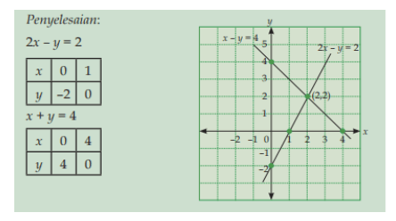
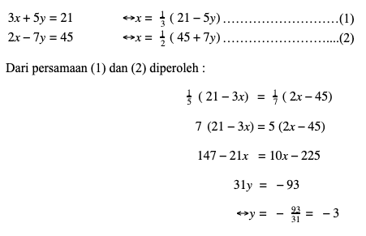
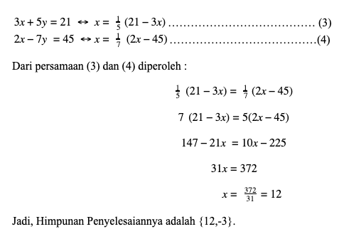
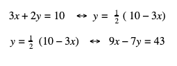
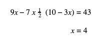
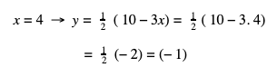
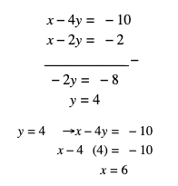

Persamaan Linear Dua Variabel (PLDV)
Pengertian Sistem Persamaan Linear Dua Variabel
Sistem Persamaan Linear Dua Variabel yaitu sebuah sistem persamaan linear yang memiliki dua variabel (peubah). Pada sistem PLDV biasanya melibatan 2 persaman dengan dua variabel.
Bentuk Umum dari Persaman Linear Dua Variaabel yaitu
ax +by = p
dx + cy = q
Sedangkan solusi dari bentuk umum PLDV yakni (X₀, Y₀) disebut dengan himpunan penyelesaian.
Contoh dari SPLDV yakni
3x + 2y = 10
9x -7y =43
Himpunan penyelesaiannya yakni {(x,y) (4, -1)}
Metode Penyelesaian SPLDV
Beberapa metode yang dapat digunakan untuk menyelesaikan sistem persamaan linear dua variabel sehingga diperoleh nilai himpunan penyelesaian, diantaranya menggunakan;
- Metode Grafik
- Metode eliminasi dengan penyamaan
- Metode eliminasi dengan cara substitusi, dan
- Metode eliminasi dengan menjumlahkan atau mengurangi
Masing-masing metode mempunyai kelebihan dan kekurangannya. Berikut ini adalah penjelasannya..
Metode Grafik
Metode grafik yaitu menentukan titik potong diantara kedua persamaan garis singgung sehingga diperoleh himpunan penyelesaian dari sistem persamaan linier dua variabel. Apabila diperoleh persamaan dua garis yang saling sejajar, maka himpunan penyelesaiannya yaitu himpunan kosong. Namun jika garisnya saling berhimpit, maka jumlah himpunan penyelesaiannya tak terhingga.
Langkah-langkah yang dilakukan dalam menggunakan metode grafik diantaranya nya:
- Menggambarkan grafik garis ax + by dan cx + y = q pada sistem koordinat kartesius. Untuk melakukan langkah ini, kita perlu menentukan titik potong sumbu X dan titik potong sumbu Y, yaitu titik potong sumbu x pada saat y = 0 dan titik potong sumbu y pada saat x = 0. Kemudian dihubungkan kedua titik potong tersebut sehingga dihasilkan sebuah garis persamaan.
- Menentukan koordinat titik potong kedua garis (apabila ada) dan yang terakhir
- Menuliskan himpunan penyelesaian nya
Tentukanlah himpunan penyelesaian Sistem PLDV di bawah ini dengan menggunakan metode grafik!
2x – y = 2
x + y = 4
Pembahasannya:
Dari langkah diatas maka diperoleh lah titik potong dari kedua garis di atas yakni (2,2). Jadi himpunan penyelesaian dari sistem persamaan diatas yaitu (2,2).
Keuntungan dari menggunakan metode grafik yaitu, kita bisa menentukan himpunan penyelesaian nya secara visual. Artinya, hasil dapat dilihat secara langsung, sedangkan kelemahannya yakitu penggunaan metode grafik kurang efektif untuk menyelesaikan PLDV yang variabelnya berbentuk desimal karena terlihat tidak tepat pada media grafiknya
Metode eliminasi menggunakan penyamaan
Menggunakan metode eliminasi dengan penyamaan misalnya, pada sistem persamaan linear dua variabel yang variabelnya X dan Y akan dibuat suatu persamaan yang tidak mengandung nilai x nya. Maka bisa dikatakan bahwa X telah dieliminasi menggunakan penyamaan
Langkah-langkah untuk melakukan eliminasi dengan penyamaan diantaranya;
- Mencari nilai x dari kedua persamaan yang diberikan seolah-olah dianggap sebagai bilangan yang diketahui, maka dikatakan bahwa X dinyatakan dalam Y. kemudian
- Hasil yang didapat dipersamakan. Dalam kasus ini kIta juga bisa menyatakan nilai x kedalam y. kemudian
- hasil yang didapat dipersamakan seperti contoh berikut;
Tentukanlah himpunan penyelesaian Sistem PLDV di berikut ini ;
3x +5y = 21
2x – 7 = 45
Penyelesaiannya;

Kekurangan pada metode eliminasi dengan pennyamaan akan membutuhkan langkah yang lebih banyak. Sehingga apabila satu variabel yang diketahui tidak langsung disubstitusikan ke dalam persamaan, namun malah mencari variabel lain menggunakan metode eliminasi, maka akan mengurangi ketelitian pada saat menghitung.
Metode eliminasi menggunakan substitusi
Pada sistem persamaan linear dua variabel dengan variabel x dan y beberapa langkah-langkah yang dapat dilakukan dilakukan berapa langkah-langkah yang dilakukan pada metode eliminasi dengan subtitusi diantaranya
- Memilih salah satu persamaan yang sederhana kemudian menyatakan y ke dalam x atau x kedalam y. Kemudian,
- Mensubstitusikan x atau y yang diperoleh yang diperoleh pada langkah pertama dalam persamaan lainnya.
- Menyelesaikan persamaan yang didapat pada Langkah kedua. Dan yang terakhir
- Menulis himpunan penyelesaiannya
Contoh soal metode eliminasi dan subtitusi;
Tentukanlah himpunan penyelesaian dari sistem persamaan linear dua variabel berikut ini;
3x + 2y = 9
x – 7y = 43
Penyelesaiannya:
Langkah 1, nyatakanlah x ke dalam variabel y

Langkah 2, menyelesaikan nilai x dan y

Langkah 3, mensubstitusikan nilai x dan y pada persamaan;

jadi, Himpunan penyelesaian nya yaitu (4,-1)
Metode Gabungan Eliminasi menjumlahkan, meurangkan, ataupun mensubstitusi
Langkah – langkah untuk menyelesaikan sistem persamaan linear dua variabel menggunakan metode ini yakni;
- Menentukan nilai x atau y menggunakan metode eliminasi dengan cara pengurangan atau menambahkan. Setelah itu
- Mensubstitusikan nilai x atau y yang diperoleh pada langkah pertama, kesalah satu persamaan yang diperoleh dan menyelesaikannya
- Menuliskan himpunan penyelesaian.
Contoh soalnya;
Tentukanlah himpunan penyelesaian dari sistem persamaan linear dua variabel berikut;
4 (x-1) + y = 5x -3y + 6
3x – 2y – 4 = 2x + 2
Penyelesaiannya;
4 (x-1) + y = 5x -3y + 6
4x -4 + y = 5x – 3y + 6
x -4 = -10 . . . . . (1)
3x – 2y – 4 =2x +2
3x – 2x + 4 = 2x + 2
x – 2y = -2 . . . . . (2)
Langkah 1; Menentukan nilai x atau y menggunakan metode eliminasi dan substitusi yakni;
jadi, Himpunan penyelesaian nya yaitu (6, 4)